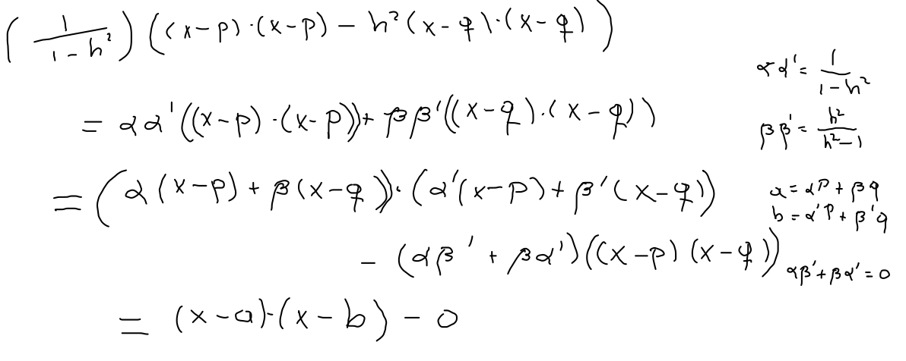

Continuamos en la búsqueda del lugar geométrico de los puntos que satisfacen d(x,P)=hd(x,Q), para un 0<h∈R distinto de 1, dados P y Q.
En la línea que pasa por P y Q, encontramos a=αP+βQ y su conjugado armónico b=α′P+β′Q respecto a la pareja P, Q; con α=h+11β=h+1h, y α′=1−h1β′=h−1h, y satisfacen las relaciones αα′=1−h21,ββ′=h2−1h2,αβ′=−βα′, y las coordenadas baricéntricas del punto medio de ab son (αα′,ββ′).
Afirmación El lugar geométrico buscado es el círculo C con ecuación (x−a)⋅(x−b)=0, que como sabemos es el círculo con diámetro ab.
Usando las expresiones en coordenadas baricéntricas de a y b y sus relaciones reducimos la ecuación de C a la forma
 0=(x−a)⋅(x−b)=(1−h21)((x−P)⋅(x−P)−h2(x−Q)⋅(x−Q)),
De donde concluimos que x está en C, si y solo si, satisface la ecuación d(x,P)=hd(x,Q)□
Teorema Sean P,Q,a,b cuatro puntos colineales, y sean C1 y C2 los círculos con diámetro PQ y ab respectivamente. Entonces son equivalentes:
Las parejas P,Q y a,b son armónicas
Se cumple que (a−P)⋅(b−Q)=−(a−Q)⋅(b−P)
El punto b está en la línea polar de a respecto a C1.
Los círculos C1 y C2 se intersectan ortogonalmente.